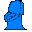
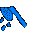

Hunger |
The most painfully painful. It can drop at an instant if you don't have that "Cheat Trophy" on your lot. So get that refrigerator on and then get cookin', Cooking Mama! |
|  Bladder |
That bladder's gonna burst, Cooking Mama! Save up that money and time (and that Cheat Trophy) ready. Good thing that when you're a ghost, that you don't have to pee at all on the floor, or on the sidewalks. The ghosts can walk through walls and not have the time to get the mail and toilet for you, you know... |
|  Hygiene |
Beware of this one! If you make one false move when you run to the bathroom, then your sim will need one of these! |